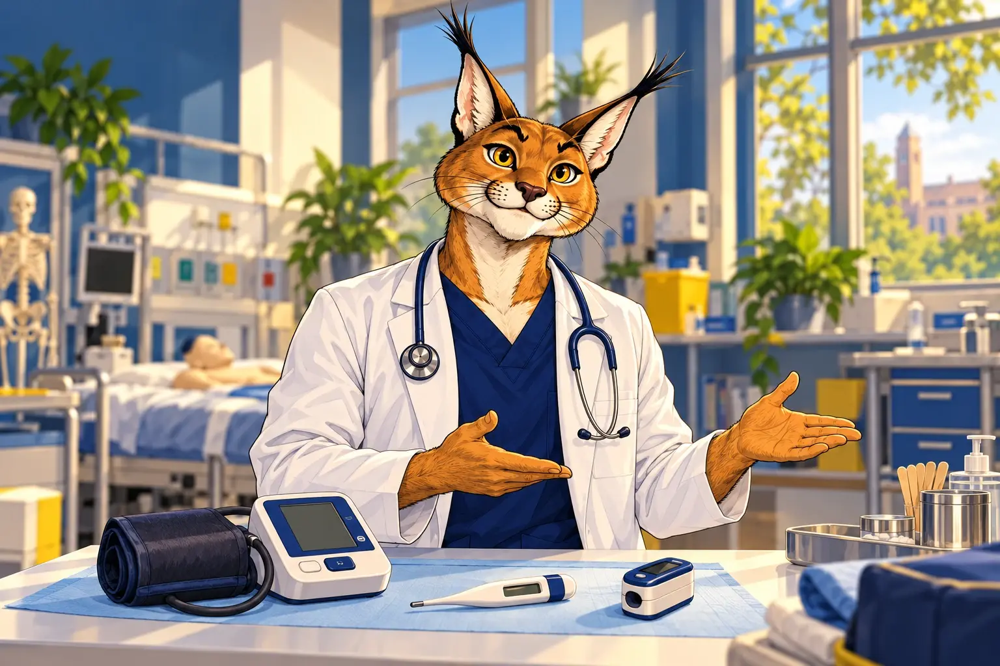
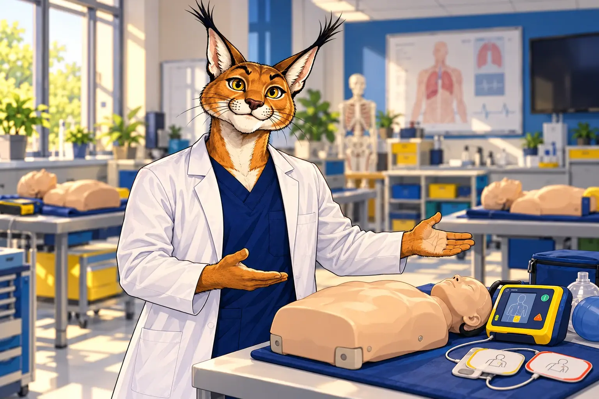
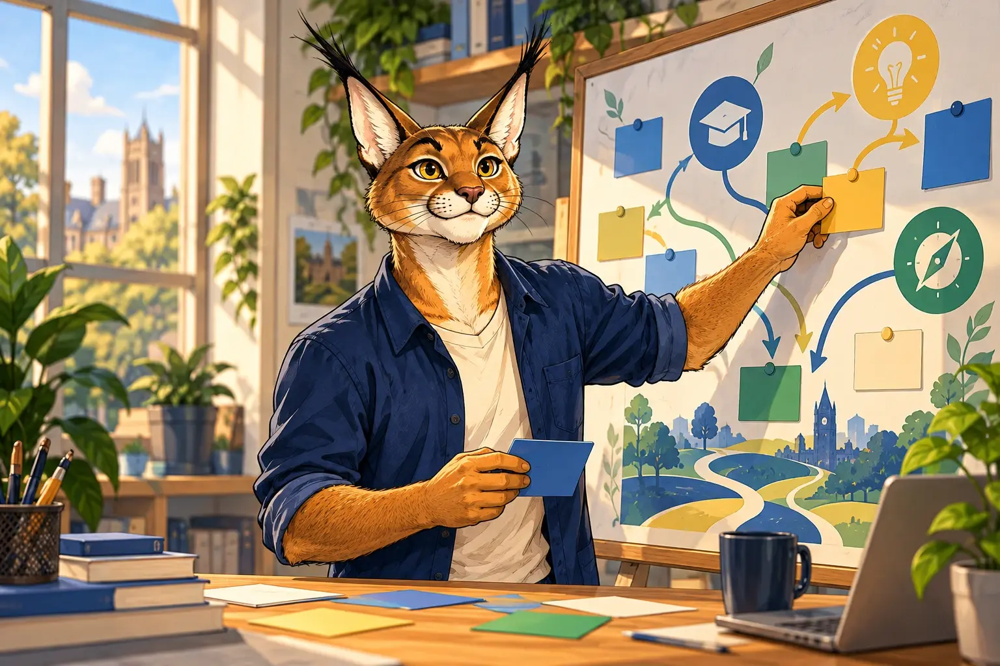

Semana 1
La célula y la química de la vida
Prácticas de microscopía y reacciones que vas a usar todo primer año.
Cursos Premedical 2027
Cuatro semanas de laboratorio, anatomía y simulación clínica para confirmar tu vocación con certeza.


Antes de comprometerte con seis años de carrera, pasa un mes dentro de ella. Trabaja en laboratorio, toca un modelo anatómico real y resuelve tu primer caso en simulación clínica, acompañado por médicos que ejercen hoy.
Ideal si terminas la preparatoria o estás en el último semestre y quieres llegar al primer año con bases firmes.
Pensado para licenciados en áreas de la salud o afines que evalúan una maestría en ciencias de la salud o educación médica.
Desliza para recorrer el programa de la ruta Licenciatura.
Semana 1
Prácticas de microscopía y reacciones que vas a usar todo primer año.
Semana 2
Sistemas cardiovascular y respiratorio en el anfiteatro de la facultad.
Semana 3
Signos vitales, primeros auxilios y tu primer caso con paciente simulado.
Semana 4
Acompañas a un mentor en su jornada y presentas un caso ante el comité.

Constancia, retroalimentación personal y prioridad en el proceso de admisión.
Aparta tu lugar12
alumnos por grupo como máximo, con un mentor médico asignado.
Constancia con valor curricular
Suma a tu expediente de admisión en Westhill y otras universidades.
30+
años formando profesionales en Santa Fe.
Arrastra la tarjeta o usa las flechas.
“Llegué con dudas y salí sabiendo que quería Medicina. La semana de simulación me cambió la perspectiva.”
“Como nutriólogo buscaba una maestría con sentido. El curso me dejó claro qué línea de investigación seguir.”
“Los mentores te tratan como colega. Presentar mi caso frente al comité fue lo mejor del mes.”
No. Partimos de lo que viste en la preparatoria y lo llevamos a la práctica desde la primera sesión.
La inversión y los porcentajes de beca se confirman al registrarte. Tenemos descuentos por pronto pago y para alumnos Westhill.
No la garantiza, pero te da prioridad en el proceso y una carta de retroalimentación de tus mentores.
Sí. El curso está abierto a aspirantes de cualquier institución.
Bata blanca y ganas de aprender. El material de laboratorio y simulación lo ponemos nosotros.
Un asesor te escribirá en menos de 24 horas hábiles. Revisa también tu bandeja de correo no deseado.